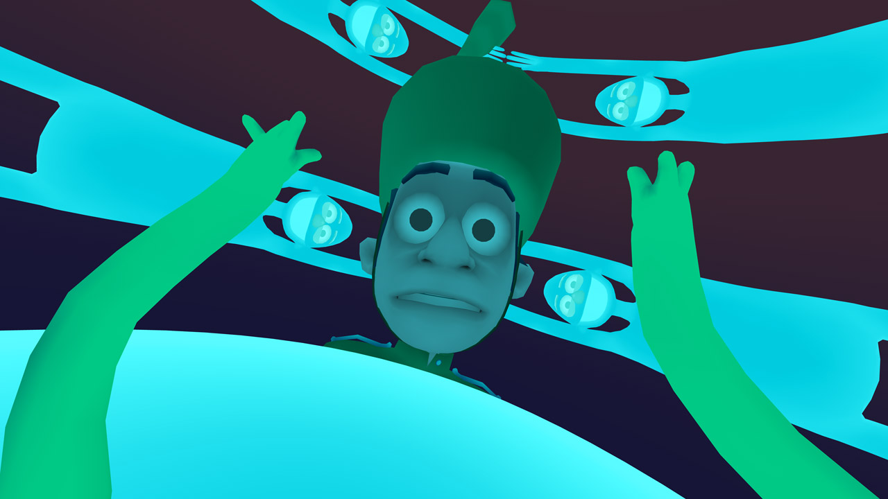
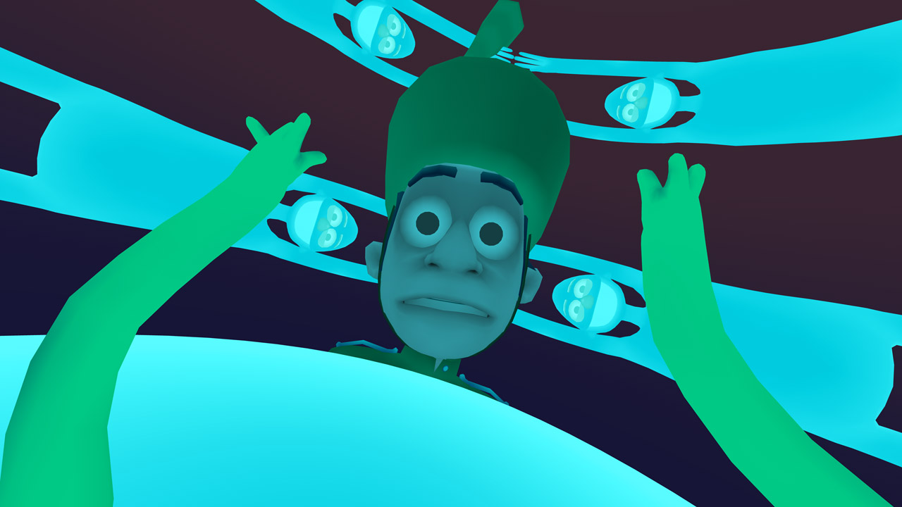
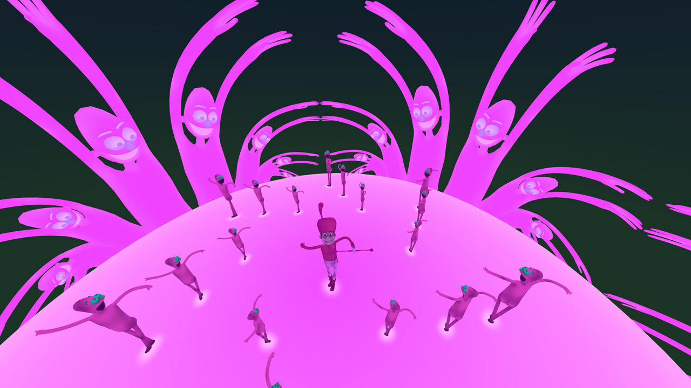
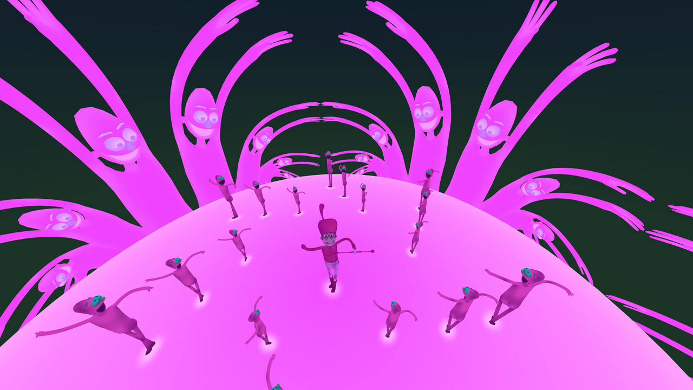

Old Friend
A room scale VR music video experience set to the song Old Friend by Future Islands. Presented by Wevr, available now on Transport Premium. For HTC Vive and Oculus Rift, this animated psychedelic dance party digs deep to pull out as much nonsensical joy as possible from the viewer with a barrage of bright colors, fun interactions, and happy bouncy characters having the best time. It's contagious. Tyler worked alone on all the visual elements, and got some dance inspiration help from close friends and family.
Winner - "Best Animated Experience" - Kaleidoscope World Tour - International Premiere - 2016 Official Selection - Tribeca Film Festival, Virtual Arcade - US Premiere - 2016 Official Selection - Chromatic Festival - 2017 Nomination - "Best Music Experience" - Proto Awards - 2016 Nomination - "Most Transformative Experience" - Proto Awards - 2016
Press
| LA Times | Engadget |
| Polygon | Popular Science |
| The Verge - Interview | VR Scout - Creator Spotlight |
| The Verge - Best Of Tribeca 2016 | Wired - Best Of Tribeca 2016 |
| Backstage | Tech Times |
| New York Times | Digital Trends |
| Tech Insider | CNBC |
| Wareable | Filmmaker Magazine |
| Lumoid | The Guardian |
| Wired - Future of VR Music Videos | Kaleidoscope World Tour |
| Wired - Kaleidoscope Winners | CNET |
| Animation Magazine | VRScout - Kaleidoscope Winners |
| Forbes | Tribeca Film Festival 2016 |
| Wevr Blog Post | Wevr Transport |
Download


Dance party
Check out the lovely people that created wicked stupid dance moves for Old Friend:

 

 

| Presented by | Wevr |
| A VR Experience by | Gentle Manhands |
| Executive Producers | Anthony BattNeville SpiteriTyler Hurd |
| Creator | Tyler Hurd |
| Animator & Programmer | Tyler Hurd |
| Dance Moves by | Gabe Askew, Jemma Cullen, Lara Podmore, Liz Maher, Anna Kipnis, Nathan Stapley, Brad Fotsch, Jay Doherty, Melesande Perera, Matthew Bice, Sonya Z Mehta, Anshuman Duneja, Greg Rice, Shawne Benson, David Hellman, Rene & Selena Pinnell, Malena Graham James & Carson Annable, Joseph Virskus, Matthew Campbell, Rachel Little, Baldur Helgason, Patty Spyrakos, Brittany Triton & Cia Hurd |
| Poster Design | David VegezziJamie Tan |
| Marketing | John Albert |
| Mixed Reality Technician | Steve Galle |
| Trailer Cast | Aaron MeyersPenny FolgerRamiro DuranSami RamlyScott StephanZeynep Abes |
| Original Recording | Old Friend by Future Islandsfrom Wave Like Home© 2008 Upset the Rhythm |
| Special Thanks | Melesande PereraRene Pinnell - Kaleidoscope VR Mark De Pace - Ghost Robot Chet Faliszek - Valve Patrick Hackett, Drew Skillman, Paul Dubois - Google Joseph Virskus |